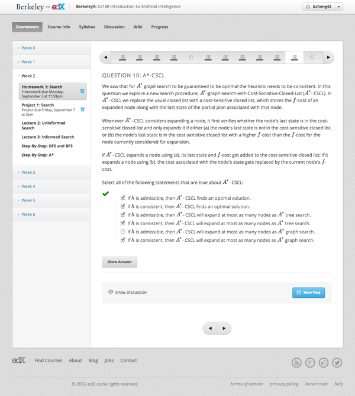
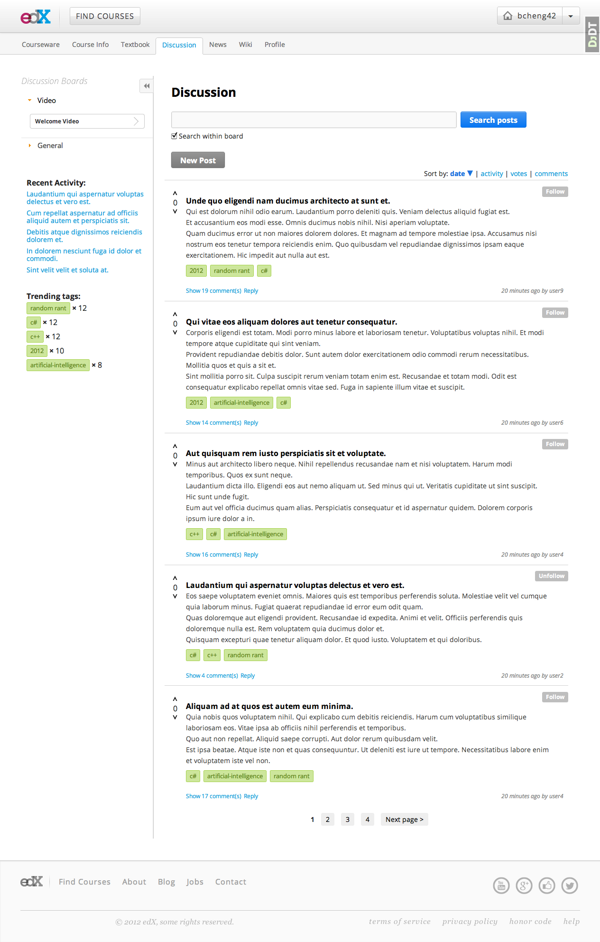

User Interface Design Internship
February - August 2012
Cambridge, MA
Overview
I joined the Coursesharing team in February, which was originally a UC Berkeley project led by Professors Pieter Abbeel and Dawn Song, supervised by PhD student Arjun Singh. We joined the edX development team in July, becoming part of the edX online learning initiative.
In this role, I worked with a team of designers and developers to create the user experience, interface design, and functionality of an open source courseware platform for higher education classes online.
Preparation
To prepare for this role, I enrolled in a wide variety of online classes to get an understanding of the online learning user experience. I also took a class at UC Berkeley in the Information School titled "Technologies for Creativity and Learning." Towards the end of this experience, I enrolled in CS 188: Introduction to Artificial Intelligence, a class at UC Berkeley that is concurrently taught on campus at UC Berkeley and online through edX software.
Projects
- assignment and question views

- student interaction and discussion

- grading tool design
What I Learned
- Front-end user interface design and development (intermediate HTML/CSS)
- Flexibility as we switched teams and adjusted to new roles, development tools, and infrastructure